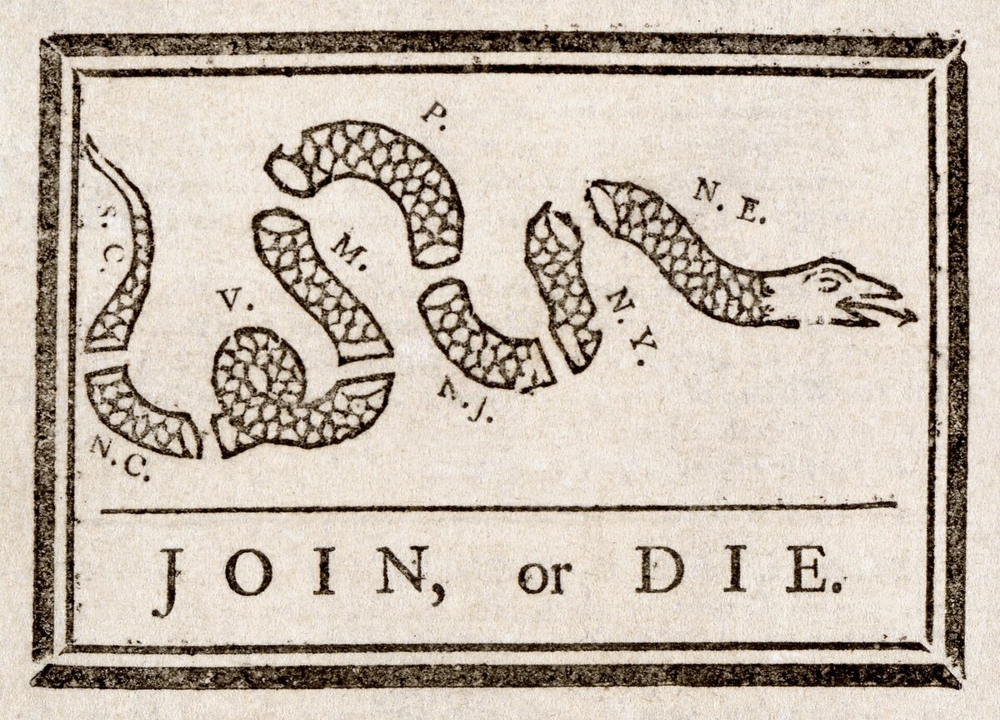
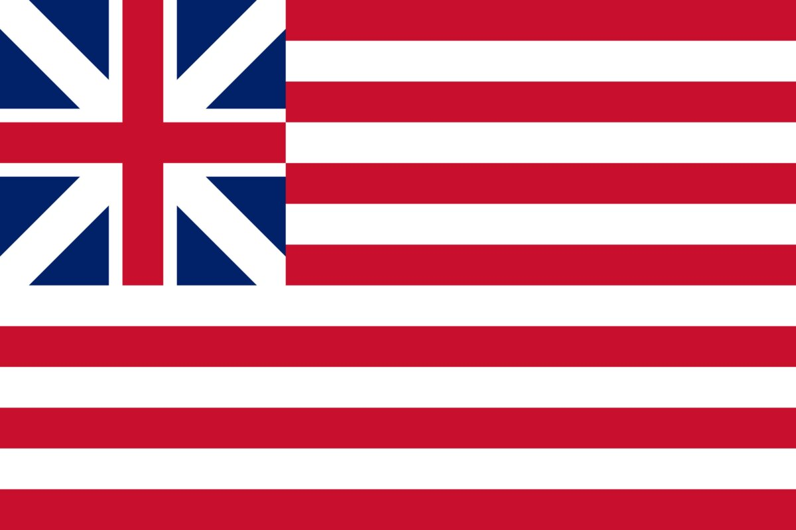
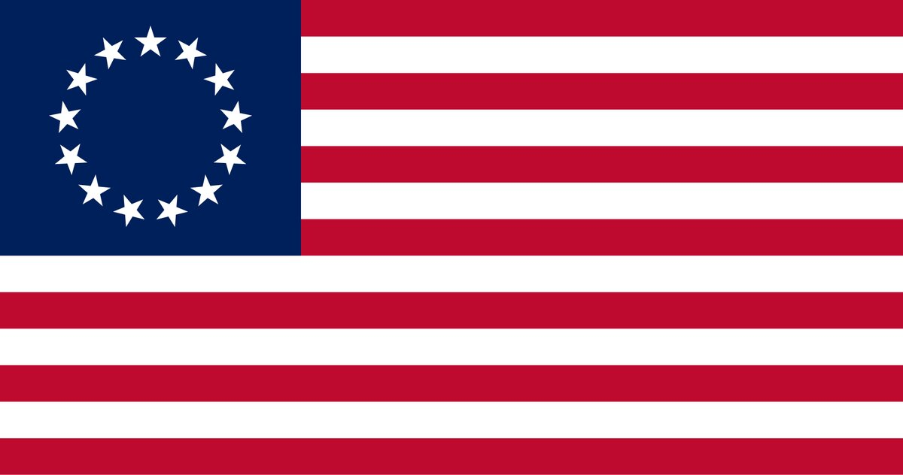
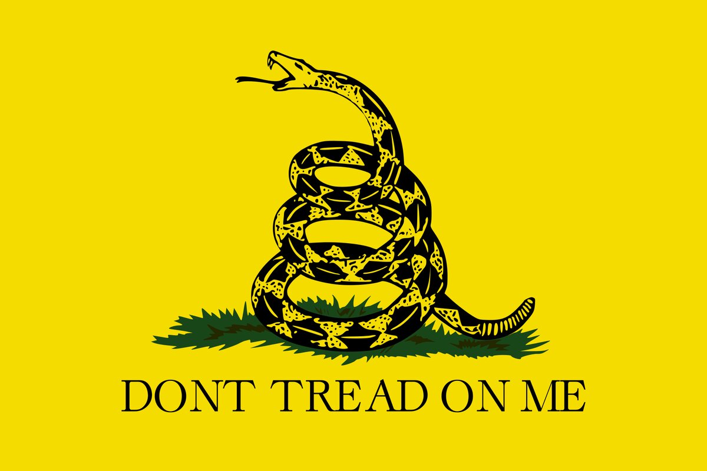
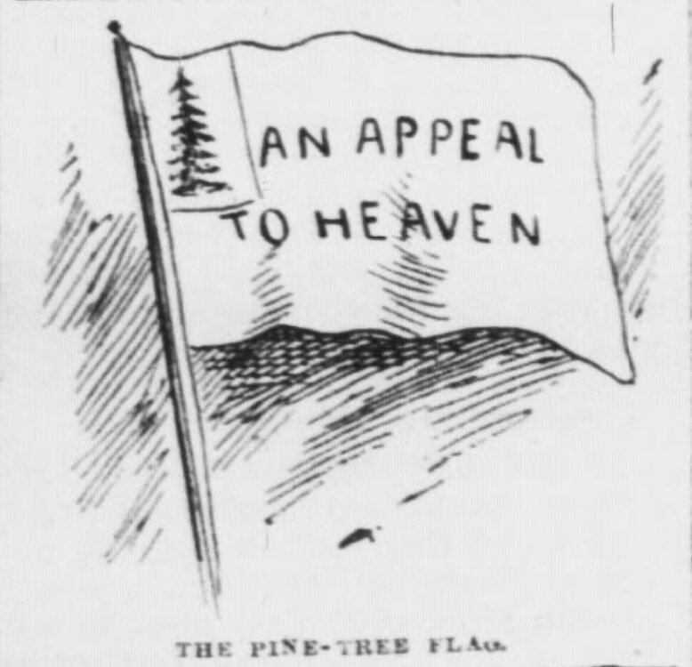
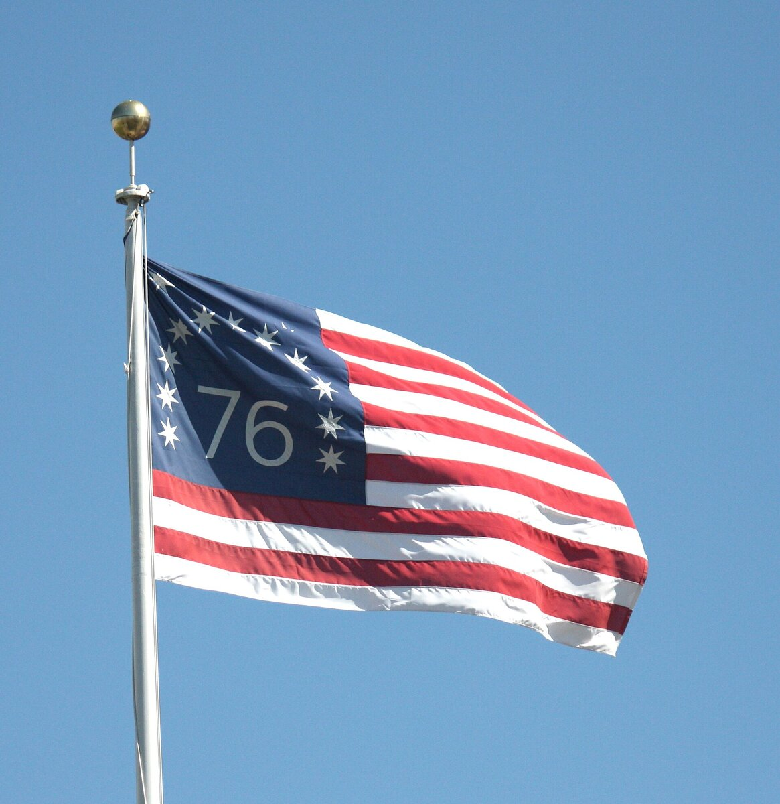
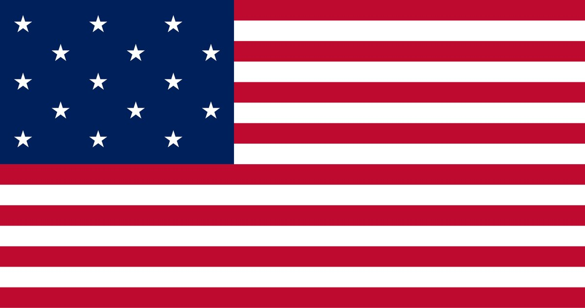
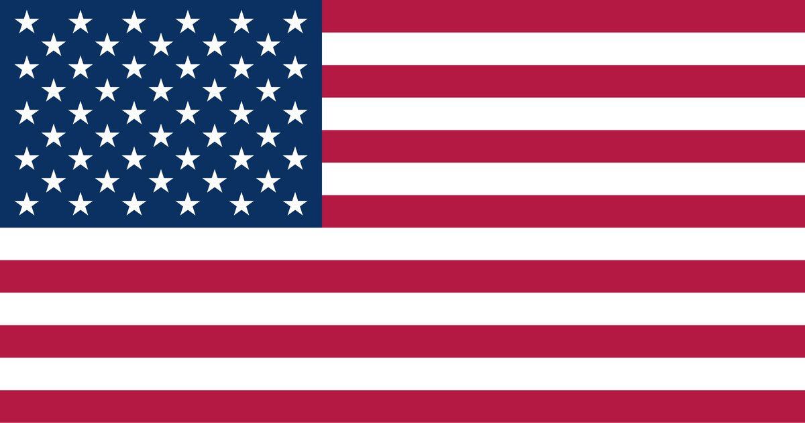

B1 · American History
The American Flag: A History in Symbols
Before there was one flag, there were dozens — a cut-up snake, a pine tree, a rattlesnake and a line of stripes nobody could agree how to arrange.
Play the audio and follow along, then read it again on your own. Tap or hover over a highlighted word to see what it means.
Before the United States had one national flag, American revolutionaries used a great many different symbols, and most of them were not flags at all.
The first famous one was a drawing in a newspaper. In May 1754, Benjamin Franklin printed a woodcut in the Pennsylvania Gazette: a snake cut into eight pieces, each piece labelled with a colony, under the words JOIN, OR DIE. It was a political cartoon, and its argument was not independence — Franklin wanted the colonies to cooperate in a war against France. Twenty years later the same image came back in colonial newspapers with a completely new meaning. It has been printed on flags many times since, but in the 1750s and 1770s it was a picture in a newspaper, not something anybody flew on a pole.

When fighting began, the colonies needed something to put on a ship. In late 1775 the Continental forces used what is now called the Grand Union flag, or the Continental Colors: thirteen red and white stripes with the British Union flag in the corner. Look at it for a moment and you can see the whole political position of 1775 in one object. The stripes say thirteen colonies acting together; the corner still says British. At that point most of the people flying it wanted their rights as British subjects, not a separate country.

Independence changed what the corner had to say. On 14 June 1777 the Continental Congress passed a short resolution: thirteen stripes, alternate red and white, and thirteen white stars on a blue field, “representing a new constellation”.
The resolution said nothing about how to arrange the stars. So flag-makers arranged them however they liked — in rows, in a circle, in a square, in the shape of a star. For years, two American flags could look very different and both be correct.

One arrangement, a circle of thirteen stars, is known as the Betsy Ross flag. Betsy Ross was a real person: an upholsterer in Philadelphia who certainly made flags for the Pennsylvania navy. The story that she sewed the first Stars and Stripes for George Washington comes from her grandson, who told it publicly in 1870, nearly a century after the event. No document from the 1770s supports it. Historians treat it as family tradition rather than established fact, which is not the same as calling it false — it is simply unproven.

Other flags of the period were made for particular units and particular arguments. In 1775 Christopher Gadsden of South Carolina gave the commander of the new Continental Navy a yellow flag with a coiled rattlesnake and the words DONT TREAD ON ME. The rattlesnake was already an American symbol — Franklin had joked in print that the colonies should send rattlesnakes to Britain in exchange for the convicts Britain sent them — and the warning is specific: this animal does not attack first, and it does not back away.

A different image carried a different idea. Several New England units and the small fleet of ships Washington fitted out in 1775 used a white flag with a green pine tree and the motto AN APPEAL TO HEAVEN. The pine tree was already the emblem of New England, and the phrase comes from the English philosopher John Locke: when there is no earthly judge left to appeal to, a people may appeal to heaven. On a ship's flag, that is a legal argument flying in the wind.

The Bennington flag is the one that teaches the most caution. It is a striking design — a large 76, stars with seven points, and the stripe arrangement reversed — and it is traditionally linked to the Battle of Bennington in 1777. The surviving flag, however, is made of machine-woven cloth and is now generally dated to the early nineteenth century, probably made for an anniversary. The design is genuinely old; the famous object is probably not as old as the story says.

After independence the flag kept changing with the country. In 1795, two new states brought fifteen stars and fifteen stripes — and that fifteen-stripe flag is the one Francis Scott Key watched over Fort McHenry in 1814 when he wrote the words that became the national anthem.

It quickly became obvious that adding a stripe for every state would not work. In 1818 Congress fixed the stripes at thirteen, for the original colonies, and ruled that a new star would be added for each new state on the fourth of July after it joined. That rule is still in force, and it is why the flag has changed twenty-seven times.
The last change was in 1960, when Hawaii brought the count to fifty. The design in use today was one of many submitted; the version usually credited is the work of a seventeen-year-old student from Ohio, Robert Heft, who made it for a school project.

Put the symbols in a line and you can read the argument developing. A cut snake asking colonies to cooperate. A flag with Britain still in the corner. A constellation with no fixed arrangement, because nobody had decided yet what the thing was. A rattlesnake warning. A pine tree appealing to heaven. Then one design, fixed by law, with a rule for adding states — which is a country deciding not only what it is, but how it intends to grow.
Key Vocabulary
- a woodcut a picture printed from a design cut into a block of wood
- a cartoon a drawing in a newspaper that makes a political point
- to cooperate to work together towards the same aim
- a resolution a formal decision taken by a group such as a congress
- a constellation a group of stars seen as a pattern in the sky
- an upholsterer a person whose trade is covering furniture with fabric
- a motto a short phrase that expresses the beliefs of a group
- an emblem a design that represents a place, a group or an idea
- coiled wound round in circles, as a snake is before it strikes
- an anthem the official song of a country
- to support to back up, to provide evidence for — careful: not to put up with or endure
The American Flag: A History in Symbols — B1 · American History · Renan the Teacher, English Language Academy · https://renangrossi.github.io/englishclasses/reading/b1/american-flag-symbols.html
Interactive Exercises
Practice
Complete each exercise, then click Submit to see your score and an explanation for every answer.
Speaking & Writing
Discussion
There are no right answers here — use these to practice speaking, or write a short answer to each.
- Which of these symbols do you find the strongest, and why?
- The Betsy Ross story survives even though there is no evidence for it. Why do countries keep stories like that?
- Has the flag of your country changed? What was added or taken away, and what did the change mean?
- The 1818 law added a rule for adding stars in the future. What does it say about a country that it designs its flag to change?